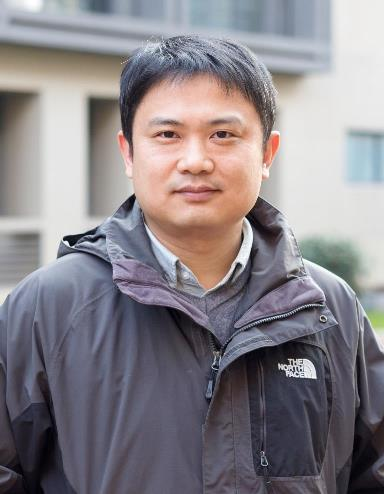

|  | Associate Professor College of Computer Science and Technology Nanjing University of Aeronautics and Astronautics
Jiangjun Road#29, Jiangning, Nanjing, China, 211106
|
{kind=link}
Ju Qian’s current research interests focus on using machine learning, computer vision, and robot techniques to automate various software engineering tasks.
His previous work also covered topics on program analysis, software testing, and software maintenance and evolution. He has published over 50 papers in international journals (IST, SCIS, JCST, IJSEKE, etc.) and conferences (ICSE, ICSME, QRS, SCAM, PASTE, APSEC, etc.).
His previous work also covered topics on program analysis, software testing, and software maintenance and evolution. He has published over 50 papers in international journals (IST, SCIS, JCST, IJSEKE, etc.) and conferences (ICSE, ICSME, QRS, SCAM, PASTE, APSEC, etc.).
Bio
| ■ | 2014- | Nanjing University of Aeronautics and Astronautics, China |
| ■ | 2013-2014 | State University of New York at Stony Brook, US, Visiting Scholar |
| ■ | 2008-2013 | Nanjing University of Aeronautics and Astronautics, China |
| ■ | 2003-2008 | Southeast University, China, PhD, Advisor: Prof. Baowen Xu |
| ■ | 1999-2003 | Southeast University, China, B.Eng |
Research Projects
Past Projects on:
| ■ | Cloud-based load testing and testing for IaaS cloud |
| ■ | Naval industry system testing |
| ■ | Web service testing |
| ■ | Memory leak diagnosing |
| ■ | Refactoring for better concurrency |
| ■ | Fault localization based on testing information |
| ■ | Java pointer analysis and program slicing |
Courses
| ■ | 2010- | Software Testing Methods and Techniques, Graduate |
| ■ | 2010- | Software Testing, Undergraduate |
| ■ | 2015-2016 | Compiler Principles, Undergraduate |
| ■ | 2010-2015 | Computer Graphics, Undergraduate |
Software
| ■ | CloudTest: A platform for SaaS application and IaaS infrastructure testing |
| ■ | SOATest: A test platform for web services (SOAP/BPEL-based services and RESTful microservices) |
| ■ | MemTest: A memory leak tester and diagnoser for Java-based web applications |
| ■ | Diagger: An automatic fault diagnoser for OMG DDS middleware based distributed systems |
| ■ | DdsTest: A unit and integration testing tool for OMG DDS(Data Distribution Service) middleware based distributed systems |
| ■ | CloudTesting: A cloud-based functional tester |
| ■ | Slithice: An experimental Java program slicer An Eclipse plugin for system dependence graph based program slicing [pdf] [link] |
| ■ | ASI: A static source code defect scaner |
| ■ | Deagle: A system for computer Forensics |
| ■ | RevLink: A proxy tool to enter the in-connection blocked internal nets Can be used to access services, e.g., Remote Desktop, in firewall-protected internal nets |
Students
| ■ | Master Students: Changjian Li, Wenming Jin, Shuoyan Yan, Zhengyu Shang, Yan Wan(m), Xu Zhou, Yan Wang(f), Xiangzhen Meng, Wei Jin, Wenduo Jia |
Past
| ■ | Master Students: Lei Zhang, Binxian Tao, Lijuan Hong, Peixing Yang, Di Zhou, Hui Zhou, Han Wu, Hao Chen |